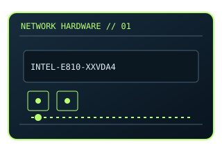

[ MODEL-SPECIFIC NETWORK HARDWARE ]
Intel Ethernet Network Adapter E810-XXVDA4
Four-port 10/25GbE SFP28 PCIe adapter for server and data-center links. This entry uses the labeled manufacturer model identifier and cites primary product/support documentation.

MODEL IDENTIFICATION: Match the complete model/part number and hardware revision on the item label to manufacturer documentation. Do not apply this entry to near-name variants.
Exact specifications and compatibility
| Cataloged model | Intel Ethernet Network Adapter E810-XXVDA4 |
|---|---|
| Dedicated subcategory | Ethernet adapters |
| Bus / host interface | PCI Express 4.0 x16 host interface. |
| Ports / physical interfaces | 4 × SFP28 cages; media modules/cables are separate. |
| PHY, radio or protocol | Ethernet 10/25GBASE-R; Intel E810 controller family. |
| PoE | No PoE input or PoE output is documented for this product. |
| Link-rate vs throughput | Up to 25 Gb/s per port; nominal link speed, not application throughput. No benchmark claimed. Link rates are nominal negotiated/PHY specifications, not measured application throughput; no measured specimen result is claimed. |
| Firmware / driver support | Intel Ethernet drivers and NVM firmware; consult Intel support for OS and package matrix. |
| Compatibility checks | Confirm PCIe lane/slot availability, supported optics/DACs and matching peer rates. |
Model-specific notes
The 4-port XXVDA4 is not the dual-port E810-XXVDA2 already cataloged.
Primary manufacturer sources
- Intel Ethernet Network Adapter E810-XXVDA4 specificationsManufacturer product specification or documentation for the exact model/family.
- Manufacturer support and compatibility resourcesFirmware, driver, compatibility, revision or support details; applicability may depend on the exact hardware revision and region.
Vendor maximum rates are not test results. Confirm regional variants, hardware revision and current support status with the manufacturer.